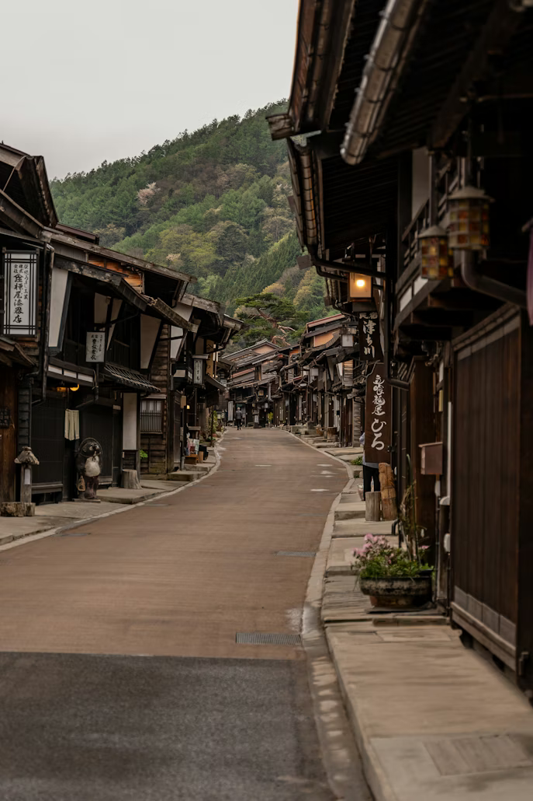
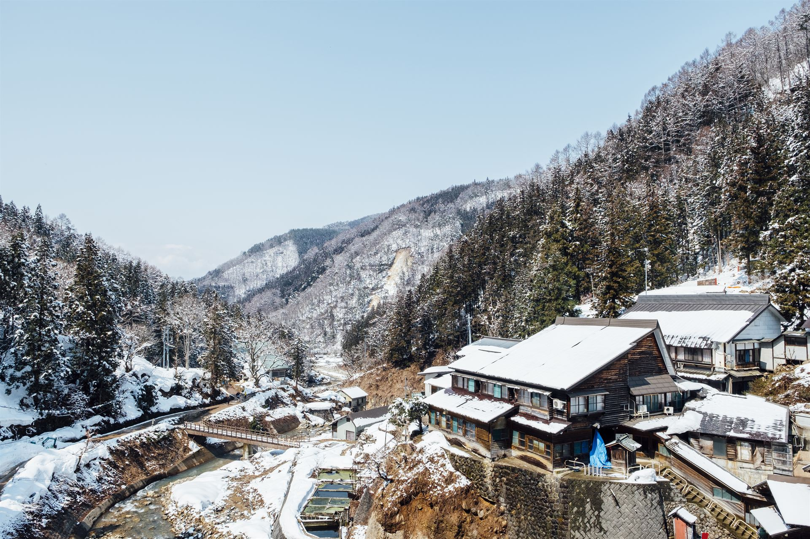
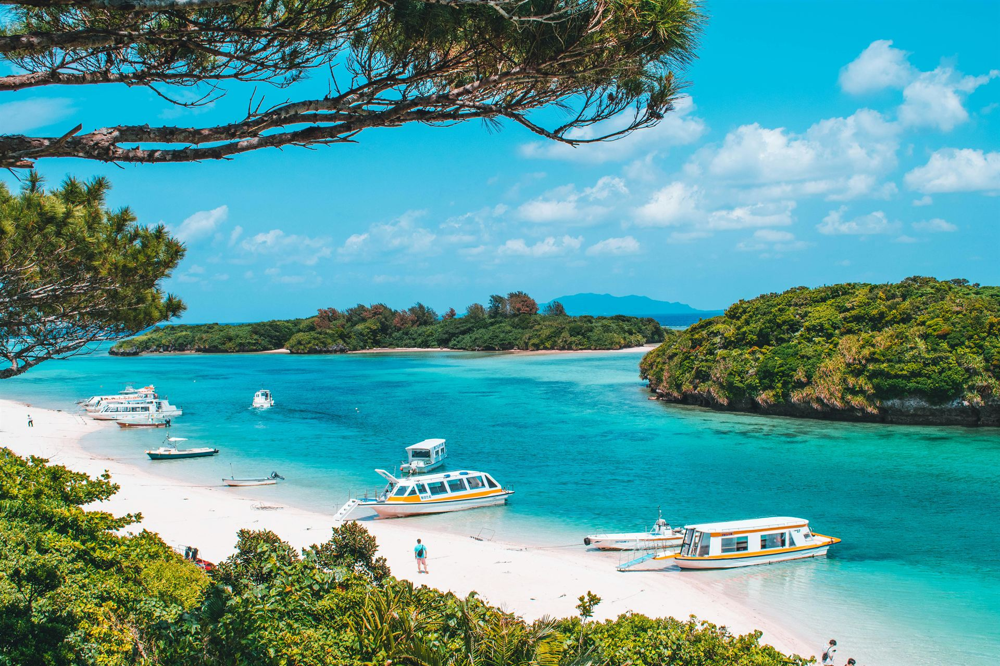
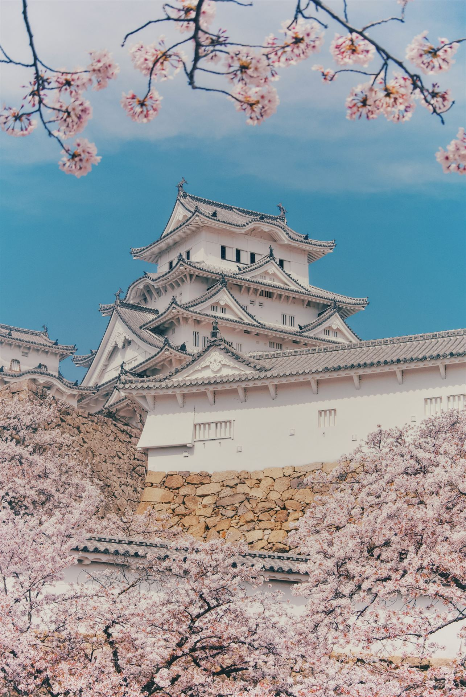
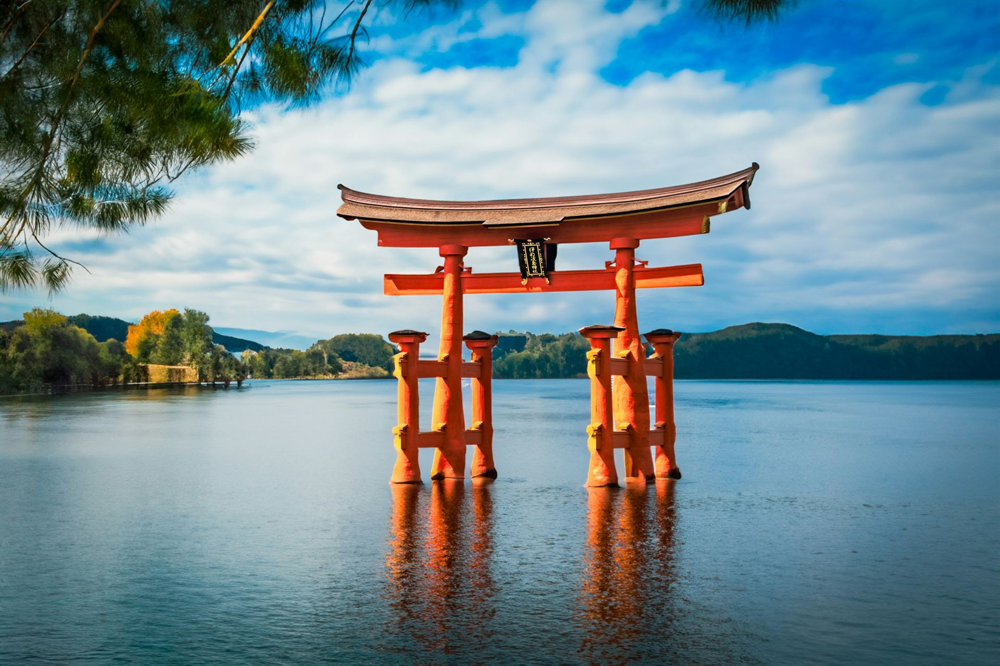
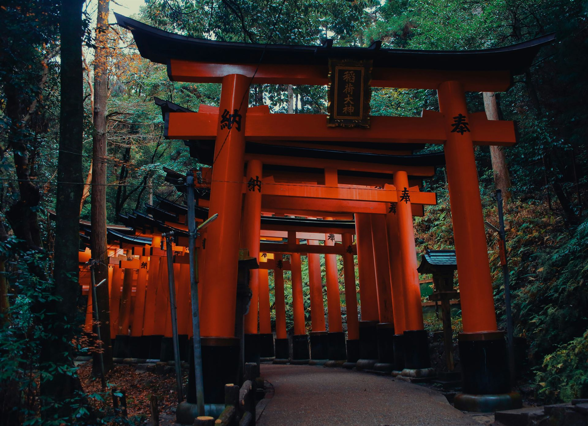

Discover Japan
Destinations of Infinite Contrast



From bustling metropolises to serene countryside retreats – discover the diverse beauty of Japan's most captivating locations.



Discover Japan's most cherished landmarks, from ancient temples to modern museums, and learn about the country's rich cultural heritage.Japan’s landscape is a living museum where centuries of history coexist in harmony.

Widely considered Japan's most spectacular castle for its imposing size and beauty. Unlike many other landmarks, it was never destroyed by war, earthquake, or fire. Its complex defense systems and bright white exterior resemble a bird taking flight.

A sublime example of Shinden-zukuri (aristocratic palace) architecture integrated into the natural landscape. Built over the water to avoid defiling the sacred island soil, the complex appears to float during high tide. It represents the Japanese spiritual concept of beauty where human creativity and nature coexist in perfect harmony.

A mesmerizing architectural phenomenon winding through the sacred forest of Mount Inari. This shrine is the headquarter of 30,000 Inari shrines across Japan. The iconic Senbon Torii pathways are formed by over 10,000 individual vermilion gates, each donated by Japanese businesses seeking prosperity, creating a spiritual tunnel of endless repetition.